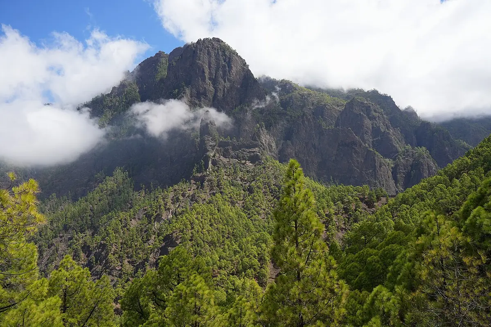
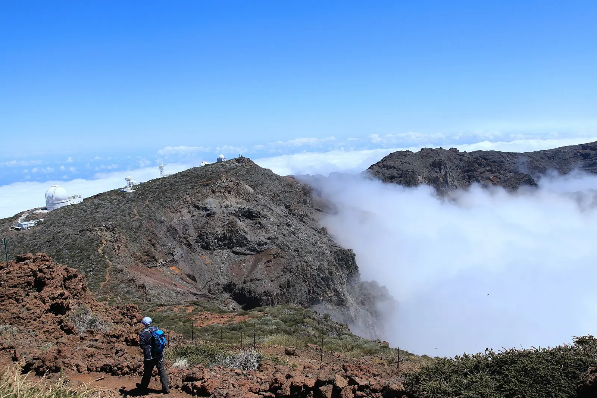
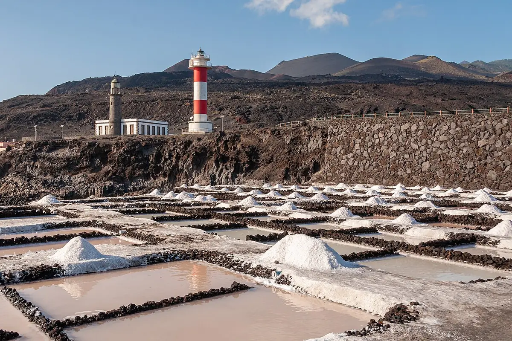
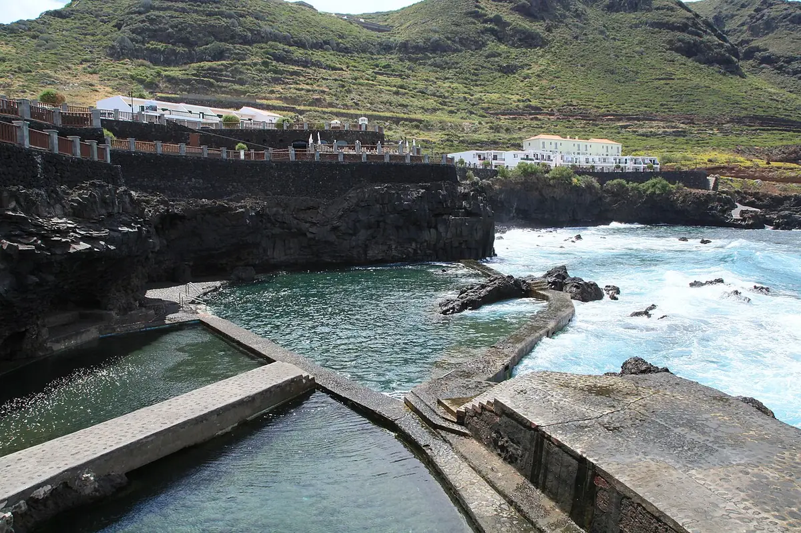

Sun 13 – Sun 20 December 2026 · 7 nightsP 13. – P 20. detsember 2026 · 7 ööd
OutSinna
Sun 13 · P 13. · Tallinn 06:00 – Zürich 08:00 · Zürich 09:40 – La Palma 13:10
BackTagasi
Sun 20 · P 20. · La Palma 14:00 – Zürich 19:10 · Zürich 21:10 – Tallinn 01:05 (Mon 21)(E 21.)Local times. La Palma is 2 hours behind Tallinn.Kohalik aeg. La Palmal on kell 2 tundi vähem kui Tallinnas.
12 things not to miss12 asja, mida La Palmal kindlasti teha
Each number is the day it happens in that plan: tap it to jump there. A dash means the plan skips it.Number näitab, mitmendal päeval see plaanis ette tuleb: vajuta sellele, et päeva juurde minna. Kriips tähendab, et plaan jätab selle vahele.
Five ways round the island. Each has three bases of 2–3 nights, the last near the airport.Viis moodi saarele ring peale teha. Igas plaanis on kolm ööbimiskohta 2–3 ööks, viimane lennujaama lähedal.
Madeira, again: the levadas become Los Tilos, Pico do Arieiro becomes the Roque, Sabor aMar becomes El Trébol, and Porto Moniz becomes the Charco Azul pools.Nagu Madeiral: levadade asemel Los Tilos, Pico do Arieiro asemel Roque, Sabor aMari asemel El Trébol ja Porto Monizi asemel Charco Azuli basseinid.
Kid-sized: walks of 2 hours at most, the sea most days and dinner by 19:00.Lapse mõõtu: matkad kuni 2 tundi, meri enamikul päevadel ja õhtusöök hiljemalt kell 19:00.
ASun ChaserPäikesejahtijaour pickmeie valik
West, south, east: the three driest sides of the island, short transfers, and both meteor nights on the dark west side.Lääs, lõuna, ida: saare kolm kõige kuivemat poolt, lühikesed sõidud ööbimiskohtade vahel ja mõlemad meteooriööd pimedal läänepoolel.
1Los Llanos13–16 Dec13.–16. dets
2Los Canarios16–18 Dec16.–18. dets
3Los Cancajos18–20 Dec18.–20. dets
BGrand LoopSuur ring
The full anticlockwise ring, wild north coast included. The most scenery, and the most driving.Terve ring vastupäeva, koos metsiku põhjarannikuga. Kõige rohkem vaateid ja kõige rohkem sõitmist.
1Santa Cruz13–15 Dec13.–15. dets
2Los Llanos15–18 Dec15.–18. dets
3Los Cancajos18–20 Dec18.–20. dets
CEasy BeachRahulik rand
Sea every day and no summit drive: warm coastal bases, the shortest days behind the wheel.Meri iga päev, tipusõitu pole: soojad ööbimiskohad ranniku ääres ja kõige vähem aega roolis.
1Fuencaliente coastFuencaliente rannik13–15 Dec13.–15. dets
2Puerto Naos15–18 Dec15.–18. dets
3Los Cancajos18–20 Dec18.–20. dets
DWild North & StarsMetsik põhi ja tähed
Dark-sky north-west, then the laurel north-east. The most drama, and the most rain risk.Pimeda taevaga loodeosa, siis loorberimetsaga kirdeosa. Kõige võimsamad maastikuvaated ja kõige suurem vihmaoht.
1Tijarafe13–16 Dec13.–16. dets
2Puntallana16–18 Dec16.–18. dets
3Santa Cruz18–20 Dec18.–20. dets
EHikers’ EditionMatkajate nädal
Caldera, volcano ridge and laurel gorges from a heated mountain house. The longest walks.Caldera, vulkaaniahelik ja loorberimetsaga kuristikud, ööbimiskohaks köetav mägimaja. Pikimad matkad.
1El Paso13–16 Dec13.–16. dets
2Puntallana16–18 Dec16.–18. dets
3Breña Alta18–20 Dec18.–20. dets
The five plans side by side. Week totals; rain is the average December rain where you sleep (2023–2025).Viis plaani kõrvuti. Nädala kokkuvõte; sademed on ööbimiskohtade keskmine detsembrikuu sajuhulk (2023–2025).
At the wheelRoolis
A13 h 0513 h 5 min
B16 h 5016 h 50 min
C10 h
D14 h
E11 h 4511 h 45 min
DistanceLäbisõit
A421 km
B560 km
C322 km
D468 km
E407 km
Rain at basesSademed ööbimiskohtades
A33 mm
B37 mm
C33 mm
D116 mm
E80 mm
WalksMatkad
A4
B4
C3
D5
E5
Show as a tableNäita tabelina
PlanPlaan
At the wheelRoolis
DistanceLäbisõit
Rain at basesSademed ööbimiskohtades
WalksMatkad
A · Sun ChaserPäikesejahtija
13 h 0513 h 5 min
421 km
33 mm
4
B · Grand LoopSuur ring
16 h 5016 h 50 min
560 km
37 mm
4
C · Easy BeachRahulik rand
10 h
322 km
33 mm
3
D · Wild North & StarsMetsik põhi ja tähed
14 h
468 km
116 mm
5
E · Hikers’ EditionMatkajate nädal
11 h 4511 h 45 min
407 km
80 mm
5
Day by dayPäevakava
Showing plan A, Sun Chaserplan B, Grand Loopplan C, Easy Beachplan D, Wild North & Starsplan E, Hikers’ Edition. As you scroll, the map flies to each day and draws its drive.Näidatud on plaan A, Päikesejahtijaplaan B, Suur ringplaan C, Rahulik randplaan D, Metsik põhi ja tähedplaan E, Matkajate nädal. Kerimise ajal näitab kaart iga päeva paiku ja joonistab selle päeva sõiduteekonna.
1
Day 1: 1. päev: Land and go westMaandumine ja läände
Sun 13 Dec · about 1 h driving, 35 kmP 13. dets · sõitu umbes 1 h, 35 km
Sleep: Los Llanos, night 1 of 3Ööbimine: Los Llanos, 1. öö 3-st · Sunset 18:15 · moon 20%, sets 22:09Päikeseloojang 18:15 · kuu 20%, loojub 22:09
Land at SPC; pick up the CICAR car at the airport.Maandumine SPC lennujaamas; võta CICAR-i rendiauto kohe lennujaamast.
Late lunch at Casa Goyo: grilled fish next to the airport Sunday hours: check.Hiline lõuna restoranis Casa Goyo: grillitud kala lennujaama kõrval pühapäevased ajad: kontrolli.
LP-3 tunnel to the west; groceries at SuperDino Convento, Los Llanos (daily 05–23).LP-3 tunnelist läände; toidupood: SuperDino Convento, Los Llanos (iga päev 05–23).
Check in, Los Llanos.Majutus: Los Llanos.
Geminids, best night of the trip: a short family look; more meteors after the moon sets at 22:09.Geminiidid, reisi parim öö: lühike vaatlus kogu perega; kui kuu kell 22:09 loojub, on meteoore rohkem.
Up since 03:00 Tallinn time: keep the evening short.Ärkvel alates kella 03:00-st Tallinna aja järgi: ära venita õhtut.
Bad-weather backupHalva ilma varuplaan
Flight late or Casa Goyo shut: snack from SuperDino, dinner at the base. Rain or cloud: Geminids again tomorrow night.Lend hilineb või Casa Goyo kinni: vahepala SuperDino poest, õhtusöök ööbimiskohas. Vihm või pilved: geminiidid homme öösel uuesti.
2
Day 2: 2. päev: Into the CalderaCalderasse
Mon 14 Dec · about 1 h 50 driving, 45 kmE 14. dets · sõitu umbes 1 h 50 min, 45 km
Sleep: Los Llanos, night 2 of 3Ööbimine: Los Llanos, 2. öö 3-st · Sunset 18:16 · moon 28%, sets 23:04Päikeseloojang 18:16 · kuu 28%, loojub 23:04

The Caldera de Taburiente from the Lomo de las Chozas pathCaldera de Taburiente, vaade Lomo de las Chozase rajalt. Photo: imehling, CC BY-SA 3.0, cropped.Foto: imehling, CC BY-SA 3.0, kärbitud.
La Cumbrecita on a booked car slot: Circuito de los Miradores, 2.9 km loop, about 1 h 30 (+130 m), or the flat first km of Lomo de las Chozas and back.La Cumbrecita broneeritud sissesõiduajaga: Circuito de los Miradores, 2,9 km ring, umbes 1 h 30 min (+130 m), või rada Lomo de las Chozas: tasane esimene km ja tagasi.
Caldera visitor centre, El Paso (daily 09:00–16:45).Caldera külastuskeskus, El Paso (iga päev 09:00–16:45).
Lunch in El Paso town (Bodegón Tamanca is closed Mondays).Lõuna El Paso linnas (Bodegón Tamanca on esmaspäeviti kinni).
Playa de Tazacorte, then El Trébol at 18:00: fish at sunset (book).Playa de Tazacorte, siis kell 18:00 El Trébol: kala päikeseloojangu ajal (broneeri).
Geminids night 2; the moon sets 23:04.Geminiidide 2. öö; kuu loojub 23:04.
Cumbrecita road shut or cloudy: El Pilar “hidden cone” loop (1.5 km) and its playground. Rain or a weather alert: skip the walks; the visitor centre is indoors.Cumbrecita tee kinni või ilm pilves: El Pilari „peidetud koonuse“ ring (1,5 km) ja mänguväljak. Vihm või ilmahoiatus: jäta matkad vahele; külastuskeskus on siseruumides.
3
Day 3: 3. päev: Above the cloudsPilvede kohal
Tue 15 Dec · about 3 h 35 driving, 126 kmT 15. dets · sõitu umbes 3 h 35 min, 126 km
Sleep: Los Llanos, night 3 of 3Ööbimine: Los Llanos, 3. öö 3-st · Sunset 18:16 · moon 37%, sets 23:58Päikeseloojang 18:16 · kuu 37%, loojub 23:58

Telescope domes on the Caldera rim, with cloud pouring in belowTeleskoopide kuplid Caldera serval, all voolab sisse pilv. Photo: Frank Vincentz, CC BY-SA 3.0, cropped.Foto: Frank Vincentz, CC BY-SA 3.0, kärbitud.
Fill the tank: no fuel on the LP-4 (Tazacorte Shell 06–21).Tangi paak täis: LP-4 teel tanklat pole (Tazacorte Shell 06–21).
Roque de los Muchachos: Espigón del Roque path, 0.6 km each way, about 1 h. Dress for frost and wind.Roque de los Muchachos: rada Espigón del Roque, 0,6 km ühte suunda, umbes 1 h. Riietu soojalt ja tuulekindlalt.
Visitor centre: 10:00–16:30 daily in winter, €15, under-12s free, card only.Külastuskeskus: talvel iga päev 10:00–16:30, 15 €, alla 12-aastased tasuta, ainult kaardimakse.
Lunch at Pino de la Virgen, Puntagorda (daily 12–23).Lõuna: Pino de la Virgen, Puntagorda (iga päev 12–23).
Sunset from Mirador El Time.Päikeseloojang: Mirador El Time.
Dinner at El Trébol or Montecarlo, Puerto de Tazacorte.Õhtusöök: El Trébol või Montecarlo, Puerto de Tazacorte.
About 1 h 30 of bends up: motion-sickness routine for the kid. Observatory tours are 6+, so not for your 5-year-old.Umbes 1 h 30 min kurvilist teed üles: kasuta lapse sõiduiivelduse leevendamiseks tavapäraseid võtteid. Observatooriumi ekskursioonid on alates 6. eluaastast, sinu 5-aastasele need seega ei sobi.
Bad-weather backupHalva ilma varuplaan
LP-4 closed, snow or thick cloud on top: whale watching from Tazacorte if seats are left (OceanExplorer daily; Fancy II Mon, Wed, Fri, Sat) or a beach day. Rough sea as well: Caños de Fuego lava-tube centre, Las Manchas (daily 10–18).LP-4 kinni, tipus lumi või paks pilv: vaalavaatlus Tazacorte sadamast, kui kohti veel on (OceanExplorer iga päev; Fancy II E, K, R, L), või rannapäev. Kui ka meri on tormine: laavatunneli keskus Caños de Fuego, Las Manchas (iga päev 10–18).
4
Day 4: 4. päev: Lava coast to the southMööda laavarannikut lõunasse
Wed 16 Dec · about 2 h 10 driving, 62 kmK 16. dets · sõitu umbes 2 h 10 min, 62 km
Sleep: Los Canarios, night 1 of 2Ööbimine: Los Canarios, 1. öö 2-st · Sunset 18:16 · moon 47%, sets 00:53Päikeseloojang 18:16 · kuu 47%, loojub 00:53
Tajogaite: the 2021 lava fields from the Lomo del Piojo viewpoint access: check.Tajogaite: 2021. aasta laavaväljad Lomo del Piojo vaatepunktist ligipääs: kontrolli.
Lunch at Kiosko La Zamora, cliff-top fish (Wed–Sun).Lõuna: Kiosko La Zamora, kala kaljuserval (K–P).
Check in, Los Canarios.Majutus: Los Canarios.
Most west-coast kitchens close on Wednesdays; La Zamora is open.Enamik lääneranniku söögikohti on kolmapäeviti kinni; La Zamora on lahti.
Bad-weather backupHalva ilma varuplaan
Rain: skip Charco Verde; La Zamora, then an early check-in.Vihm: jäta Charco Verde vahele; La Zamora, siis varakult ööbimiskohta.
5
Day 5: 5. päev: Volcano, salt and lighthousesVulkaan, sool ja majakad
Thu 17 Dec · about 55 min driving, 27 kmN 17. dets · sõitu umbes 55 min, 27 km
Sleep: Los Canarios, night 2 of 2Ööbimine: Los Canarios, 2. öö 2-st · Sunset 18:17 · moon 57%, sets 01:50Päikeseloojang 18:17 · kuu 57%, loojub 01:50

Fuencaliente salt pans and its two lighthousesFuencaliente soolatiigid ja kaks majakat. Photo: Fraganda, CC BY-SA 4.0, cropped.Foto: Fraganda, CC BY-SA 4.0, kärbitud.
San Antonio volcano: visitor centre and rim path hours: check.San Antonio vulkaan: külastuskeskus ja kraatriserva rada lahtiolekuajad: kontrolli.
Optional: Bodegas Teneguía tour (daily 12:30); tasting adults only.Soovi korral: Bodegas Teneguía ekskursioon (iga päev 12:30); degusteerimine ainult täiskasvanutele.
Lunch at El Jardín de la Sal among the salt pans.Lõuna: El Jardín de la Sal soolatiikide keskel.
Playa Echentive: black lava pools; paddle only.Playa Echentive: mustad laavabasseinid; ainult varvaste kastmiseks.
The rim path is loose cinder: hold the kid’s hand.Kraatriserva rajal on lahtine vulkaaniline kruus: hoia lapsel käest kinni.
Bad-weather backupHalva ilma varuplaan
Strong wind on the rim: visitor centre only, then the salt pans. Rain: skip Echentive; the winery tour is indoors.Kraatriserval tugev tuul: ainult külastuskeskus, siis soolatiigid. Vihm: jäta Echentive vahele; ekskursioon veinitehases on siseruumides.
6
Day 6: 6. päev: East by the cavesKoobaste kaudu itta
Fri 18 Dec · about 1 h 10 driving, 40 kmR 18. dets · sõitu umbes 1 h 10 min, 40 km
Sleep: Los Cancajos, night 1 of 2Ööbimine: Los Cancajos, 1. öö 2-st · Sunset 18:17 · moon 67%, sets 02:50Päikeseloojang 18:17 · kuu 67%, loojub 02:50
Belmaco cave and its rock carvings hours: check.Belmaco koobas ja selle kaljujoonised lahtiolekuajad: kontrolli.
Lunch at Kiosko Salemera, sea-front fish (Fri to 22:30).Lõuna: Kiosko Salemera, kala mere ääres (R kuni 22:30).
Santa Cruz: Barco de la Virgen ship museum hours: check, balconies, ice cream.Santa Cruz: laevamuuseum Barco de la Virgen lahtiolekuajad: kontrolli, rõdud, jäätis.
Check in, Los Cancajos.Majutus: Los Cancajos.
The old-town main street is flat: easy on gran’s knees.Vanalinna peatänav on tasane: säästab vanaema põlvi.
Bad-weather backupHalva ilma varuplaan
Rain: Museo Insular, Santa Cruz hours: check.Vihm: Museo Insular, Santa Cruz lahtiolekuajad: kontrolli.
7
Day 7: 7. päev: Laurel forest and sea poolsLoorberimets ja merebasseinid
Sat 19 Dec · about 1 h 50 driving, 68 kmL 19. dets · sõitu umbes 1 h 50 min, 68 km
Sleep: Los Cancajos, night 2 of 2Ööbimine: Los Cancajos, 2. öö 2-st · Sunset 18:18 · moon 77%, sets 03:54Päikeseloojang 18:18 · kuu 77%, loojub 03:54
Los Tilos: Espigón Atravesado trail, 5 km return, about 2 h, through a tunnel and past a water gallery. Only 15 parking spaces: arrive early.Los Tilos: rada Espigón Atravesado, 5 km edasi-tagasi, umbes 2 h, läbi tunneli ja mööda veegaleriist. Ainult 15 parkimiskohta: ole kohal varakult.
Charco Azul sea pools, San Andrés (children’s pool best at mid tide).Merebasseinid Charco Azul, San Andrés (lastebassein on parim keskmise veeseisu ajal).
Lunch at Casa Asterio (closed Tue–Wed).Lõuna: Casa Asterio (T–K kinni).
Bad-weather backupHalva ilma varuplaan
Car park full: Cubo de la Galga (4 km return, about 2 h). Heavy rain: El Tendal cave visitor centre, San Andrés y Sauces (daily 10–18). Rough sea: skip the pools.Parkla täis: Cubo de la Galga (4 km edasi-tagasi, umbes 2 h). Paduvihm: koopa külastuskeskus El Tendal, San Andrés y Sauces (iga päev 10–18). Tormine meri: jäta basseinid vahele.
8
Day 8: 8. päev: Market and homeTurg ja koju
Sun 20 Dec · about 35 min driving, 17 kmP 20. dets · sõitu umbes 35 min, 17 km
Fly home 14:00Kojulend kell 14:00 · Sunrise 07:59Päikesetõus 07:59
Mazo market, Sunday morning hours: check: cheese, cakes, fruit.Mazo turg, pühapäeva hommikul lahtiolekuajad: kontrolli: juust, koogid, puuviljad.
Fuel: DISA at the airport (Sun 08–21). Return the car with the fuel level it came with.Kütus: DISA lennujaamas (P 08–21). Tagasta auto sama kütusekogusega, mis oli paagis autot kätte saades.
Car back at the airport; flight 14:00.Auto tagasi lennujaama; lend 14:00.
Bad-weather backupHalva ilma varuplaan
Rain or market closed: breakfast in Los Cancajos, then an early airport run.Vihm või turg kinni: hommikusöök Los Cancajoses, siis varakult lennujaama.
1
Day 1: 1. päev: Land and Santa CruzMaandumine ja Santa Cruz
Sun 13 Dec · about 30 min driving, 14 kmP 13. dets · sõitu umbes 30 min, 14 km
Sleep: Santa Cruz, night 1 of 2Ööbimine: Santa Cruz, 1. öö 2-st · Sunset 18:15 · moon 20%, sets 22:09Päikeseloojang 18:15 · kuu 20%, loojub 22:09
Land at SPC; pick up the CICAR car at the airport.Maandumine SPC lennujaamas; võta CICAR-i rendiauto kohe lennujaamast.
Late lunch at Casa Goyo: grilled fish next to the airport Sunday hours: check.Hiline lõuna restoranis Casa Goyo: grillitud kala lennujaama kõrval pühapäevased ajad: kontrolli.
Groceries: HiperDino Express, Los Cancajos (daily 08–22).Toidupood: HiperDino Express, Los Cancajos (iga päev 08–22).
Check in, Santa Cruz; stroll the balconied sea front.Majutus: Santa Cruz; jaluta mere ääres rõdudega majade juures.
Geminids, best night of the trip: a short family look; more meteors after the moon sets at 22:09.Geminiidid, reisi parim öö: lühike vaatlus kogu perega; kui kuu kell 22:09 loojub, on meteoore rohkem.
Town light washes out faint meteors; a dark terrace helps.Linnavalguses jäävad nõrgad meteoorid märkamatuks; pime terrass aitab.
Bad-weather backupHalva ilma varuplaan
Rain or tired: skip the stroll; dinner at the base. Cloud: Geminids again tomorrow night.Vihm või väsimus: jäta jalutuskäik ära; õhtusöök ööbimiskohas. Pilved: geminiidid homme öösel uuesti.
2
Day 2: 2. päev: Laurel forest and sea poolsLoorberimets ja merebasseinid
Mon 14 Dec · about 1 h 40 driving, 58 kmE 14. dets · sõitu umbes 1 h 40 min, 58 km
Sleep: Santa Cruz, night 2 of 2Ööbimine: Santa Cruz, 2. öö 2-st · Sunset 18:16 · moon 28%, sets 23:04Päikeseloojang 18:16 · kuu 28%, loojub 23:04
Los Tilos: Espigón Atravesado trail, 5 km return, about 2 h, through a tunnel and past a water gallery. Only 15 parking spaces: arrive early.Los Tilos: rada Espigón Atravesado, 5 km edasi-tagasi, umbes 2 h, läbi tunneli ja mööda veegaleriist. Ainult 15 parkimiskohta: ole kohal varakult.
Charco Azul sea pools, San Andrés (children’s pool best at mid tide).Merebasseinid Charco Azul, San Andrés (lastebassein on parim keskmise veeseisu ajal).
Lunch at Casa Asterio (closed Tue–Wed).Lõuna: Casa Asterio (T–K kinni).
Geminids night 2; the moon sets 23:04.Geminiidide 2. öö; kuu loojub 23:04.
Bad-weather backupHalva ilma varuplaan
Car park full: Cubo de la Galga (4 km return, about 2 h). Heavy rain: El Tendal cave visitor centre, San Andrés y Sauces (daily 10–18). Rough sea: skip the pools.Parkla täis: Cubo de la Galga (4 km edasi-tagasi, umbes 2 h). Paduvihm: koopa külastuskeskus El Tendal, San Andrés y Sauces (iga päev 10–18). Tormine meri: jäta basseinid vahele.
3
Day 3: 3. päev: The wild north coastMetsik põhjarannik
Tue 15 Dec · about 3 h 50 driving, 145 kmT 15. dets · sõitu umbes 3 h 50 min, 145 km
Sleep: Los Llanos, night 1 of 3Ööbimine: Los Llanos, 1. öö 3-st · Sunset 18:16 · moon 37%, sets 23:58Päikeseloojang 18:16 · kuu 37%, loojub 23:58

La Fajana: calm pools walled off from the Atlantic surfLa Fajana: vaiksed basseinid, müüriga Atlandi murdlainetest eraldatud. Photo: Frank Vincentz, CC BY-SA 3.0, cropped.Foto: Frank Vincentz, CC BY-SA 3.0, kärbitud.
La Fajana sea pools, Barlovento (steps down; no services in winter). Rough sea: Laguna de Barlovento playground.Merebasseinid La Fajana, Barlovento (trepid alla; talvel teenuseid pole). Tormine meri: Laguna de Barlovento mänguväljak.
Santo Domingo de Garafía: cliff-top village.Santo Domingo de Garafía: küla kaljuserval.
Lunch at Pino de la Virgen, Puntagorda.Lõuna: Pino de la Virgen, Puntagorda.
Check in, Los Llanos; rest.Majutus: Los Llanos; puhka jalga.
Sunset from Mirador El Time.Päikeseloojang: Mirador El Time.
Dinner at El Trébol (book).Õhtusöök: El Trébol (broneeri).
Heavy rain in the north: take the LP-3 tunnel west instead (about 45 min).Põhjas paduvihm: sõida hoopis LP-3 tunneli kaudu läände (umbes 45 min).
4
Day 4: 4. päev: Into the CalderaCalderasse
Wed 16 Dec · about 2 h 15 driving, 60 kmK 16. dets · sõitu umbes 2 h 15 min, 60 km
Sleep: Los Llanos, night 2 of 3Ööbimine: Los Llanos, 2. öö 3-st · Sunset 18:16 · moon 47%, sets 00:53Päikeseloojang 18:16 · kuu 47%, loojub 00:53
The Caldera de Taburiente from the Lomo de las Chozas pathCaldera de Taburiente, vaade Lomo de las Chozase rajalt. Photo: imehling, CC BY-SA 3.0, cropped.Foto: imehling, CC BY-SA 3.0, kärbitud.
La Cumbrecita on a booked car slot: Circuito de los Miradores, 2.9 km loop, about 1 h 30 (+130 m), or the flat first km of Lomo de las Chozas and back.La Cumbrecita broneeritud sissesõiduajaga: Circuito de los Miradores, 2,9 km ring, umbes 1 h 30 min (+130 m), või rada Lomo de las Chozas: tasane esimene km ja tagasi.
Caldera visitor centre, El Paso (daily 09:00–16:45).Caldera külastuskeskus, El Paso (iga päev 09:00–16:45).
Lunch at Bodegón Tamanca, a cellar in the rock (Wed–Sun).Lõuna: Bodegón Tamanca, kaljusse raiutud kelder (K–P).
Dinner at Taberna del Puerto (El Trébol is closed Wed).Õhtusöök: Taberna del Puerto (El Trébol on kolmapäeviti kinni).
Cumbrecita road shut or cloudy: El Pilar “hidden cone” loop (1.5 km) and its playground. Rain or a weather alert: skip the walks; the visitor centre is indoors.Cumbrecita tee kinni või ilm pilves: El Pilari „peidetud koonuse“ ring (1,5 km) ja mänguväljak. Vihm või ilmahoiatus: jäta matkad vahele; külastuskeskus on siseruumides.
5
Day 5: 5. päev: Above the cloudsPilvede kohal
Thu 17 Dec · about 3 h 35 driving, 125 kmN 17. dets · sõitu umbes 3 h 35 min, 125 km
Sleep: Los Llanos, night 3 of 3Ööbimine: Los Llanos, 3. öö 3-st · Sunset 18:17 · moon 57%, sets 01:50Päikeseloojang 18:17 · kuu 57%, loojub 01:50
Telescope domes on the Caldera rim, with cloud pouring in belowTeleskoopide kuplid Caldera serval, all voolab sisse pilv. Photo: Frank Vincentz, CC BY-SA 3.0, cropped.Foto: Frank Vincentz, CC BY-SA 3.0, kärbitud.
Fill the tank: no fuel on the LP-4 (Tazacorte Shell 06–21).Tangi paak täis: LP-4 teel tanklat pole (Tazacorte Shell 06–21).
Roque de los Muchachos: Espigón del Roque path, 0.6 km each way, about 1 h. Dress for frost and wind.Roque de los Muchachos: rada Espigón del Roque, 0,6 km ühte suunda, umbes 1 h. Riietu soojalt ja tuulekindlalt.
Visitor centre: 10:00–16:30 daily in winter, €15, under-12s free, card only.Külastuskeskus: talvel iga päev 10:00–16:30, 15 €, alla 12-aastased tasuta, ainult kaardimakse.
Lunch at Café El Time (Tue–Sun).Lõuna: Café El Time (T–P).
Playa de Tazacorte; early dinner at El Trébol or Montecarlo.Playa de Tazacorte; varajane õhtusöök: El Trébol või Montecarlo.
About 1 h 30 of bends up: motion-sickness routine for the kid. Observatory tours are 6+, so not for your 5-year-old.Umbes 1 h 30 min kurvilist teed üles: kasuta lapse sõiduiivelduse leevendamiseks tavapäraseid võtteid. Observatooriumi ekskursioonid on alates 6. eluaastast, sinu 5-aastasele need seega ei sobi.
Bad-weather backupHalva ilma varuplaan
LP-4 closed, snow or thick cloud on top: whale watching from Tazacorte if seats are left (OceanExplorer daily; Fancy II Mon, Wed, Fri, Sat) or a beach day. Rough sea as well: Caños de Fuego lava-tube centre, Las Manchas (daily 10–18).LP-4 kinni, tipus lumi või paks pilv: vaalavaatlus Tazacorte sadamast, kui kohti veel on (OceanExplorer iga päev; Fancy II E, K, R, L), või rannapäev. Kui ka meri on tormine: laavatunneli keskus Caños de Fuego, Las Manchas (iga päev 10–18).
6
Day 6: 6. päev: South cape to the eastLõunaneemest itta
Fri 18 Dec · about 3 h driving, 99 kmR 18. dets · sõitu umbes 3 h, 99 km
Sleep: Los Cancajos, night 1 of 2Ööbimine: Los Cancajos, 1. öö 2-st · Sunset 18:17 · moon 67%, sets 02:50Päikeseloojang 18:17 · kuu 67%, loojub 02:50
Fuencaliente salt pans and its two lighthousesFuencaliente soolatiigid ja kaks majakat. Photo: Fraganda, CC BY-SA 4.0, cropped.Foto: Fraganda, CC BY-SA 4.0, kärbitud.
Tajogaite: the 2021 lava fields from the Lomo del Piojo viewpoint access: check.Tajogaite: 2021. aasta laavaväljad Lomo del Piojo vaatepunktist ligipääs: kontrolli.
El Remo: early lunch at Kiosco La Charca (Thu–Mon).El Remo: varajane lõuna, Kiosco La Charca (N–E).
San Antonio volcano rim path hours: check.San Antonio vulkaani kraatriserva rada lahtiolekuajad: kontrolli.
Salt pans and lighthouses.Soolatiigid ja majakad.
Check in, Los Cancajos.Majutus: Los Cancajos.
Bad-weather backupHalva ilma varuplaan
Wind on the rim or tired: skip San Antonio; the salt pans are flat. Heavy rain: through the tunnel to Museo Insular, Santa Cruz hours: check, then an early check-in.Kraatriserval tuul või väsimus: jäta San Antonio vahele; soolatiigid on tasasel maal. Paduvihm: tunneli kaudu Santa Cruzi muuseumi Museo Insular lahtiolekuajad: kontrolli, siis varakult ööbimiskohta.
7
Day 7: 7. päev: Mazo coast and Santa CruzMazo rannik ja Santa Cruz
Sat 19 Dec · about 1 h 15 driving, 40 kmL 19. dets · sõitu umbes 1 h 15 min, 40 km
Sleep: Los Cancajos, night 2 of 2Ööbimine: Los Cancajos, 2. öö 2-st · Sunset 18:18 · moon 77%, sets 03:54Päikeseloojang 18:18 · kuu 77%, loojub 03:54
Belmaco cave and its rock carvings hours: check.Belmaco koobas ja selle kaljujoonised lahtiolekuajad: kontrolli.
Lunch at Kiosko Salemera (Sat to 22:30).Lõuna: Kiosko Salemera (L kuni 22:30).
Santa Cruz: balconies and the old-town main street, ice cream (the ship museum shuts at 14:00 on Saturdays).Santa Cruz: rõdud ja vanalinna peatänav, jäätis (laevamuuseum on laupäeviti lahti kuni 14:00).
Bad-weather backupHalva ilma varuplaan
Rain: skip Belmaco; Museo Insular, Santa Cruz Saturday mornings only; hours: check.Vihm: jäta Belmaco vahele; Museo Insular, Santa Cruz ainult laupäeva hommikuti; ajad: kontrolli.
8
Day 8: 8. päev: Beach, brunch, homeRand, hiline hommikusöök, koju
Sun 20 Dec · about 45 min driving, 20 kmP 20. dets · sõitu umbes 45 min, 20 km
Fly home 14:00Kojulend kell 14:00 · Sunrise 07:59Päikesetõus 07:59
Los Cancajos beach; pack.Rand: Los Cancajos; paki kohvrid.
Fuel in Santa Cruz (BP Bajamar, 24 h).Kütus Santa Cruzis (BP Bajamar, 24 h).
Early lunch at Casa Goyo, watching the planes Sunday hours: check.Varajane lõuna: Casa Goyo, lennukeid vaadates pühapäevased ajad: kontrolli.
Car back at the airport; flight 14:00.Auto tagasi lennujaama; lend 14:00.
Bad-weather backupHalva ilma varuplaan
Rain: skip the beach. Casa Goyo shut: brunch in Los Cancajos before you pack.Vihm: jäta rand vahele. Casa Goyo kinni: hiline hommikusöök Los Cancajoses enne pakkimist.
1
Day 1: 1. päev: Land and go southMaandumine ja lõunasse
Sun 13 Dec · about 1 h 05 driving, 40 kmP 13. dets · sõitu umbes 1 h 5 min, 40 km
Sleep: Fuencaliente coast, night 1 of 2Ööbimine: Fuencaliente rannik, 1. öö 2-st · Sunset 18:15 · moon 20%, sets 22:09Päikeseloojang 18:15 · kuu 20%, loojub 22:09
Land at SPC; pick up the CICAR car at the airport.Maandumine SPC lennujaamas; võta CICAR-i rendiauto kohe lennujaamast.
Late lunch at Casa Goyo: grilled fish next to the airport Sunday hours: check.Hiline lõuna restoranis Casa Goyo: grillitud kala lennujaama kõrval pühapäevased ajad: kontrolli.
Groceries: HiperDino Express, Los Cancajos (daily 08–22).Toidupood: HiperDino Express, Los Cancajos (iga päev 08–22).
Check in on the Fuencaliente coast: a Las Indias home or La Palma Princess.Majutus Fuencaliente rannikul: maja Las Indiases või hotell La Palma Princess.
Geminids, best night of the trip: a short family look; more meteors after the moon sets at 22:09.Geminiidid, reisi parim öö: lühike vaatlus kogu perega; kui kuu kell 22:09 loojub, on meteoore rohkem.
La Palma Princess heats its kids’ pool to about 25 °C from November; mini club from age 4.La Palma Princess soojendab novembrist lastebasseini umbes 25 °C-ni; miniklubi alates 4. eluaastast.
Bad-weather backupHalva ilma varuplaan
Flight late or Casa Goyo shut: snack from HiperDino, dinner at the base. Rain or cloud: Geminids again tomorrow night.Lend hilineb või Casa Goyo kinni: vahepala HiperDino poest, õhtusöök ööbimiskohas. Vihm või pilved: geminiidid homme öösel uuesti.
2
Day 2: 2. päev: Salt pans and lighthousesSoolatiigid ja majakad
Mon 14 Dec · about 25 min driving, 15 kmE 14. dets · sõitu umbes 25 min, 15 km
Sleep: Fuencaliente coast, night 2 of 2Ööbimine: Fuencaliente rannik, 2. öö 2-st · Sunset 18:16 · moon 28%, sets 23:04Päikeseloojang 18:16 · kuu 28%, loojub 23:04
Fuencaliente salt pans and its two lighthousesFuencaliente soolatiigid ja kaks majakat. Photo: Fraganda, CC BY-SA 4.0, cropped.Foto: Fraganda, CC BY-SA 4.0, kärbitud.
Slow morning: pool or garden at the base.Rahulik hommik: bassein või aed ööbimiskohas.
Salt pans and lighthouses, then lunch at El Jardín de la Sal.Soolatiigid ja majakad, siis lõuna restoranis El Jardín de la Sal.
Playa Echentive: black lava pools; paddle only.Playa Echentive: mustad laavabasseinid; ainult varvaste kastmiseks.
Geminids night 2; the moon sets 23:04.Geminiidide 2. öö; kuu loojub 23:04.
Bad-weather backupHalva ilma varuplaan
Wind: skip Echentive; pool afternoon. Rain: Bodegas Teneguía tour (daily 12:30), then a late lunch at El Jardín de la Sal.Tuul: jäta Echentive vahele; pärastlõuna basseini ääres. Vihm: Bodegas Teneguía ekskursioon (iga päev 12:30), siis hiline lõuna restoranis El Jardín de la Sal.
3
Day 3: 3. päev: Volcano rim to the west coastKraatriservalt läänerannikule
Tue 15 Dec · about 1 h 20 driving, 40 kmT 15. dets · sõitu umbes 1 h 20 min, 40 km
Sleep: Puerto Naos, night 1 of 3Ööbimine: Puerto Naos, 1. öö 3-st · Sunset 18:16 · moon 37%, sets 23:58Päikeseloojang 18:16 · kuu 37%, loojub 23:58
San Antonio volcano: a short stretch of the rim hours: check.San Antonio vulkaan: lühike lõik kraatriservast lahtiolekuajad: kontrolli.
El Remo, fishing hamlet on the lava (La Charca is closed Tue).El Remo, kalurikülake laava peal (La Charca on teisipäeviti kinni).
Lunch at La Nao, Puerto Naos (Fri–Tue).Lõuna: La Nao, Puerto Naos (R–T).
Check in, Puerto Naos; sunset on the promenade.Majutus: Puerto Naos; päikeseloojang promenaadil.
Puerto Naos is reopening under CO₂ monitoring: book a home cleared for overnight stays check, and obey fences and signs.Puerto Naos avatakse taas, kuid CO₂ taset jälgitakse: broneeri majutus, kus ööbimine on lubatud kontrolli, ning arvesta piirete ja siltidega.
Bad-weather backupHalva ilma varuplaan
Strong wind on the rim: visitor centre only. Rain: skip El Remo; lunch at La Nao, then an early check-in.Kraatriserval tugev tuul: ainult külastuskeskus. Vihm: jäta El Remo vahele; lõuna restoranis La Nao, siis varakult ööbimiskohta.
4
Day 4: 4. päev: Whales and dolphinsVaalad ja delfiinid
Wed 16 Dec · about 1 h 10 driving, 39 kmK 16. dets · sõitu umbes 1 h 10 min, 39 km
Sleep: Puerto Naos, night 2 of 3Ööbimine: Puerto Naos, 2. öö 3-st · Sunset 18:16 · moon 47%, sets 00:53Päikeseloojang 18:16 · kuu 47%, loojub 00:53
Fancy II whale- and dolphin-watching boat, 2.5 h, from Puerto de Tazacorte at 12:00; be there 30 min early.Vaalade ja delfiinide vaatlus laeval Fancy II, 2,5 h; väljumine kell 12:00 Puerto de Tazacorte sadamast; ole kohal 30 min varem.
Late lunch at Taberna del Puerto (open Wed; El Trébol is not).Hiline lõuna: Taberna del Puerto (kolmapäeviti lahti; El Trébol mitte).
Sunset from Mirador El Time.Päikeseloojang: Mirador El Time.
Rough sea cancels the boat: rebook for Fri 18 at 12:00 (then lunch in Tazacorte and drive east; skip Tajogaite and La Lonja); today, Playa de Tazacorte and the harbour. Rain as well: Caños de Fuego lava-tube centre, Las Manchas (daily 10–18).Tormise merega jääb paadisõit ära: broneeri ümber R 18. dets kell 12:00 (siis lõuna Tazacortes ja sõit itta; jäta Tajogaite ja La Lonja vahele); täna Playa de Tazacorte ja sadam. Kui ka sajab: laavatunneli keskus Caños de Fuego, Las Manchas (iga päev 10–18).
5
Day 5: 5. päev: A gentle Caldera lookLihtne retk Calderat vaatama
Thu 17 Dec · about 2 h 10 driving, 58 kmN 17. dets · sõitu umbes 2 h 10 min, 58 km
Sleep: Puerto Naos, night 3 of 3Ööbimine: Puerto Naos, 3. öö 3-st · Sunset 18:17 · moon 57%, sets 01:50Päikeseloojang 18:17 · kuu 57%, loojub 01:50
The Caldera de Taburiente from the Lomo de las Chozas pathCaldera de Taburiente, vaade Lomo de las Chozase rajalt. Photo: imehling, CC BY-SA 3.0, cropped.Foto: imehling, CC BY-SA 3.0, kärbitud.
La Cumbrecita on a booked car slot: Circuito de los Miradores, 2.9 km loop, about 1 h 30 (+130 m), or the flat first km of Lomo de las Chozas and back.La Cumbrecita broneeritud sissesõiduajaga: Circuito de los Miradores, 2,9 km ring, umbes 1 h 30 min (+130 m), või rada Lomo de las Chozas: tasane esimene km ja tagasi.
Caldera visitor centre, El Paso (daily 09:00–16:45).Caldera külastuskeskus, El Paso (iga päev 09:00–16:45).
Lunch at Bodegón Tamanca (Wed–Sun).Lõuna: Bodegón Tamanca (K–P).
Cumbrecita road shut or cloudy: straight to Charco Verde. Rain: the visitor centre, then lunch at Bodegón Tamanca.Cumbrecita tee kinni või ilm pilves: otse Charco Verde randa. Vihm: külastuskeskus, siis lõuna restoranis Bodegón Tamanca.
6
Day 6: 6. päev: Over to the eastÜle saare itta
Fri 18 Dec · about 1 h 20 driving, 43 kmR 18. dets · sõitu umbes 1 h 20 min, 43 km
Sleep: Los Cancajos, night 1 of 2Ööbimine: Los Cancajos, 1. öö 2-st · Sunset 18:17 · moon 67%, sets 02:50Päikeseloojang 18:17 · kuu 67%, loojub 02:50
Tajogaite: the 2021 lava fields from the Lomo del Piojo viewpoint access: check.Tajogaite: 2021. aasta laavaväljad Lomo del Piojo vaatepunktist ligipääs: kontrolli.
Santa Cruz: lunch at La Lonja (Wed–Sun), then Barco de la Virgen hours: check.Santa Cruz: lõuna restoranis La Lonja (K–P), siis Barco de la Virgen lahtiolekuajad: kontrolli.
Check in, Los Cancajos; beach.Majutus: Los Cancajos; rand.
Bad-weather backupHalva ilma varuplaan
Rain: Museo Insular, Santa Cruz hours: check.Vihm: Museo Insular, Santa Cruz lahtiolekuajad: kontrolli.
7
Day 7: 7. päev: Sea pools and laurelMerebasseinid ja loorberimets
Sat 19 Dec · about 1 h 55 driving, 69 kmL 19. dets · sõitu umbes 1 h 55 min, 69 km
Sleep: Los Cancajos, night 2 of 2Ööbimine: Los Cancajos, 2. öö 2-st · Sunset 18:18 · moon 77%, sets 03:54Päikeseloojang 18:18 · kuu 77%, loojub 03:54
Charco Azul sea pools (children’s pool best at mid tide).Merebasseinid Charco Azul (lastebassein on parim keskmise veeseisu ajal).
Los Tilos: the first stretch of the Espigón Atravesado trail (15 parking spaces).Los Tilos: Espigón Atravesado raja esimene lõik (15 parkimiskohta).
Lunch at Casa Asterio.Lõuna: Casa Asterio.
Optional stargazing tour from Los Cancajos, 3.5–4 h in all. The Moon is bright, great for craters.Soovi korral tähevaatlusretk Los Cancajosest, kokku 3,5–4 h. Kuu on hele, kraatrid paistavad hästi.
Rain: El Tendal cave visitor centre, San Andrés y Sauces (daily 10–18). Rough sea: skip the pools. Cloud: let the operator cancel.Vihm: koopa külastuskeskus El Tendal, San Andrés y Sauces (iga päev 10–18). Tormine meri: jäta basseinid vahele. Pilved: lase korraldajal ise tühistada.
8
Day 8: 8. päev: Market and homeTurg ja koju
Sun 20 Dec · about 35 min driving, 17 kmP 20. dets · sõitu umbes 35 min, 17 km
Fly home 14:00Kojulend kell 14:00 · Sunrise 07:59Päikesetõus 07:59
Mazo market, Sunday morning hours: check: cheese, cakes, fruit.Mazo turg, pühapäeva hommikul lahtiolekuajad: kontrolli: juust, koogid, puuviljad.
Fuel: DISA at the airport (Sun 08–21). Return the car with the fuel level it came with.Kütus: DISA lennujaamas (P 08–21). Tagasta auto sama kütusekogusega, mis oli paagis autot kätte saades.
Car back at the airport; flight 14:00.Auto tagasi lennujaama; lend 14:00.
Bad-weather backupHalva ilma varuplaan
Rain or market closed: breakfast in Los Cancajos, then an early airport run.Vihm või turg kinni: hommikusöök Los Cancajoses, siis varakult lennujaama.
1
Day 1: 1. päev: West to the dark sideLäände, pimedale poolele
Sun 13 Dec · about 1 h 25 driving, 54 kmP 13. dets · sõitu umbes 1 h 25 min, 54 km
Sleep: Tijarafe, night 1 of 3Ööbimine: Tijarafe, 1. öö 3-st · Sunset 18:15 · moon 20%, sets 22:09Päikeseloojang 18:15 · kuu 20%, loojub 22:09
Land at SPC; pick up the CICAR car at the airport.Maandumine SPC lennujaamas; võta CICAR-i rendiauto kohe lennujaamast.
Late lunch at Casa Goyo: grilled fish next to the airport Sunday hours: check.Hiline lõuna restoranis Casa Goyo: grillitud kala lennujaama kõrval pühapäevased ajad: kontrolli.
LP-3 tunnel; groceries at SuperDino Convento, Los Llanos (daily 05–23).LP-3 tunnel; toidupood: SuperDino Convento, Los Llanos (iga päev 05–23).
Sunset from Mirador El Time.Päikeseloojang: Mirador El Time.
Check in, Tijarafe (pick a heated home).Majutus: Tijarafe (vali köetav maja).
Geminids, best night of the trip: a short family look; more meteors after the moon sets at 22:09.Geminiidid, reisi parim öö: lühike vaatlus kogu perega; kui kuu kell 22:09 loojub, on meteoore rohkem.
A long first day after a 03:00 start.Pikk esimene päev pärast kella 03:00 äratust.
Bad-weather backupHalva ilma varuplaan
Flight late or rain: skip El Time and go straight to Tijarafe; supper from SuperDino at the base. Cloud: Geminids again tomorrow night.Lend hilineb või sajab: jäta El Time vahele ja sõida otse Tijarafesse; õhtusöök ööbimiskohas, toidukraam SuperDino poest. Pilved: geminiidid homme öösel uuesti.
2
Day 2: 2. päev: Summit dayTipupäev
Mon 14 Dec · about 3 h 15 driving, 91 kmE 14. dets · sõitu umbes 3 h 15 min, 91 km
Sleep: Tijarafe, night 2 of 3Ööbimine: Tijarafe, 2. öö 3-st · Sunset 18:16 · moon 28%, sets 23:04Päikeseloojang 18:16 · kuu 28%, loojub 23:04
Telescope domes on the Caldera rim, with cloud pouring in belowTeleskoopide kuplid Caldera serval, all voolab sisse pilv. Photo: Frank Vincentz, CC BY-SA 3.0, cropped.Foto: Frank Vincentz, CC BY-SA 3.0, kärbitud.
Fuel first: Puntagorda Repsol (06–23); none on the LP-4.Kõigepealt tangi: Puntagorda Repsol (06–23); LP-4 teel tanklat pole.
Roque de los Muchachos: Espigón del Roque path, 0.6 km each way, about 1 h. Dress for frost and wind.Roque de los Muchachos: rada Espigón del Roque, 0,6 km ühte suunda, umbes 1 h. Riietu soojalt ja tuulekindlalt.
Visitor centre: 10:00–16:30 daily in winter, €15, under-12s free, card only.Külastuskeskus: talvel iga päev 10:00–16:30, 15 €, alla 12-aastased tasuta, ainult kaardimakse.
Lunch at Pino de la Virgen, Puntagorda.Lõuna: Pino de la Virgen, Puntagorda.
Optional: Las Tricias dragon trees; walk in 30 min and turn back (full loop 4.8 km, 3 h).Soovi korral: draakonipuud Las Triciases; kõnni 30 min ja pööra tagasi (terve ring 4,8 km, 3 h).
Geminids night 2; the moon sets 23:04.Geminiidide 2. öö; kuu loojub 23:04.
About 1 h 30 of bends up: motion-sickness routine for the kid. Observatory tours are 6+, so not for your 5-year-old.Umbes 1 h 30 min kurvilist teed üles: kasuta lapse sõiduiivelduse leevendamiseks tavapäraseid võtteid. Observatooriumi ekskursioonid on alates 6. eluaastast, sinu 5-aastasele need seega ei sobi.
Bad-weather backupHalva ilma varuplaan
LP-4 closed, snow or thick cloud on top: whale watching from Tazacorte if seats are left (OceanExplorer daily; Fancy II Mon, Wed, Fri, Sat) or a beach day. Rough sea as well: Caños de Fuego lava-tube centre, Las Manchas (daily 10–18).LP-4 kinni, tipus lumi või paks pilv: vaalavaatlus Tazacorte sadamast, kui kohti veel on (OceanExplorer iga päev; Fancy II E, K, R, L), või rannapäev. Kui ka meri on tormine: laavatunneli keskus Caños de Fuego, Las Manchas (iga päev 10–18).
3
Day 3: 3. päev: Caldera and harbourCaldera ja sadam
Tue 15 Dec · about 2 h 20 driving, 73 kmT 15. dets · sõitu umbes 2 h 20 min, 73 km
Sleep: Tijarafe, night 3 of 3Ööbimine: Tijarafe, 3. öö 3-st · Sunset 18:16 · moon 37%, sets 23:58Päikeseloojang 18:16 · kuu 37%, loojub 23:58
The Caldera de Taburiente from the Lomo de las Chozas pathCaldera de Taburiente, vaade Lomo de las Chozase rajalt. Photo: imehling, CC BY-SA 3.0, cropped.Foto: imehling, CC BY-SA 3.0, kärbitud.
La Cumbrecita on a booked car slot: Circuito de los Miradores, 2.9 km loop, about 1 h 30 (+130 m), or the flat first km of Lomo de las Chozas and back.La Cumbrecita broneeritud sissesõiduajaga: Circuito de los Miradores, 2,9 km ring, umbes 1 h 30 min (+130 m), või rada Lomo de las Chozas: tasane esimene km ja tagasi.
Caldera visitor centre, El Paso (daily 09:00–16:45).Caldera külastuskeskus, El Paso (iga päev 09:00–16:45).
Late lunch at El Trébol (open Tue).Hiline lõuna: El Trébol (teisipäeviti lahti).
Cumbrecita road shut or cloudy: Tajogaite viewpoint and the beach. Rain: the visitor centre, then lunch at El Trébol.Cumbrecita tee kinni või ilm pilves: Tajogaite vaatepunkt ja rand. Vihm: külastuskeskus, siis lõuna restoranis El Trébol.
4
Day 4: 4. päev: Over the top of the islandÜle saare harja
Wed 16 Dec · about 2 h 20 driving, 87 kmK 16. dets · sõitu umbes 2 h 20 min, 87 km
Sleep: Puntallana, night 1 of 2Ööbimine: Puntallana, 1. öö 2-st · Sunset 18:16 · moon 47%, sets 00:53Päikeseloojang 18:16 · kuu 47%, loojub 00:53
La Fajana: calm pools walled off from the Atlantic surfLa Fajana: vaiksed basseinid, müüriga Atlandi murdlainetest eraldatud. Photo: Frank Vincentz, CC BY-SA 3.0, cropped.Foto: Frank Vincentz, CC BY-SA 3.0, kärbitud.
Santo Domingo de Garafía: cliff-top village.Santo Domingo de Garafía: küla kaljuserval.
Lunch at La Gaviota by the La Fajana pools (Wed–Sun 13–18; book).Lõuna: La Gaviota La Fajana basseinide juures (K–P 13–18; broneeri).
Los Tilos: Espigón Atravesado trail, 5 km return, about 2 h, through a tunnel and past a water gallery. Only 15 parking spaces: arrive early.Los Tilos: rada Espigón Atravesado, 5 km edasi-tagasi, umbes 2 h, läbi tunneli ja mööda veegaleriist. Ainult 15 parkimiskohta: ole kohal varakult.
Charco Azul sea pools, San Andrés (children’s pool best at mid tide).Merebasseinid Charco Azul, San Andrés (lastebassein on parim keskmise veeseisu ajal).
Aldea rum distillery, Los Sauces (Mon–Fri; English tour 13:00; book online).Aldea rummivabrik, Los Sauces (E–R; ingliskeelne ekskursioon 13:00; broneeri veebis).
Lunch at Casa Asterio (open Thu).Lõuna: Casa Asterio (neljapäeviti lahti).
Bad-weather backupHalva ilma varuplaan
Heavy rain: Aldea and the Santa Cruz museums. Rough sea: skip the pools.Paduvihm: Aldea ja Santa Cruzi muuseumid. Tormine meri: jäta basseinid vahele.
6
Day 6: 6. päev: Beach and Santa CruzRand ja Santa Cruz
Fri 18 Dec · about 50 min driving, 27 kmR 18. dets · sõitu umbes 50 min, 27 km
Sleep: Santa Cruz, night 1 of 2Ööbimine: Santa Cruz, 1. öö 2-st · Sunset 18:17 · moon 67%, sets 02:50Päikeseloojang 18:17 · kuu 67%, loojub 02:50
Santa Cruz: lunch at La Lonja (Wed–Sun), then Barco de la Virgen hours: check.Santa Cruz: lõuna restoranis La Lonja (K–P), siis Barco de la Virgen lahtiolekuajad: kontrolli.
Check in, Santa Cruz.Majutus: Santa Cruz.
Bad-weather backupHalva ilma varuplaan
Rain: skip the beach; Museo Insular, Santa Cruz hours: check.Vihm: jäta rand vahele; Museo Insular, Santa Cruz lahtiolekuajad: kontrolli.
7
Day 7: 7. päev: South cape day tripPäevaretk lõunatippu
Sat 19 Dec · about 2 h 10 driving, 82 kmL 19. dets · sõitu umbes 2 h 10 min, 82 km
Sleep: Santa Cruz, night 2 of 2Ööbimine: Santa Cruz, 2. öö 2-st · Sunset 18:18 · moon 77%, sets 03:54Päikeseloojang 18:18 · kuu 77%, loojub 03:54
Fuencaliente salt pans and its two lighthousesFuencaliente soolatiigid ja kaks majakat. Photo: Fraganda, CC BY-SA 4.0, cropped.Foto: Fraganda, CC BY-SA 4.0, kärbitud.
San Antonio volcano: visitor centre and rim path hours: check.San Antonio vulkaan: külastuskeskus ja kraatriserva rada lahtiolekuajad: kontrolli.
Lunch at El Jardín de la Sal among the salt pans.Lõuna: El Jardín de la Sal soolatiikide keskel.
Early dinner at Kiosko Salemera on the way back (Sat to 22:30).Tagasiteel varajane õhtusöök Kiosko Salemeras (L kuni 22:30).
Bad-weather backupHalva ilma varuplaan
Wind: salt pans and Salemera only. Rain: skip the rim; the Teneguía winery tour (daily 12:30), then a late lunch at El Jardín de la Sal.Tuul: ainult soolatiigid ja Salemera. Vihm: jäta kraatriserv vahele; Teneguía veinikoja ringkäik (iga päev 12:30), siis hiline lõuna restoranis El Jardín de la Sal.
8
Day 8: 8. päev: Market and homeTurg ja koju
Sun 20 Dec · about 35 min driving, 19 kmP 20. dets · sõitu umbes 35 min, 19 km
Fly home 14:00Kojulend kell 14:00 · Sunrise 07:59Päikesetõus 07:59
Mazo market, Sunday morning hours: check: cheese, cakes, fruit.Mazo turg, pühapäeva hommikul lahtiolekuajad: kontrolli: juust, koogid, puuviljad.
Fuel: DISA at the airport (Sun 08–21). Return the car with the fuel level it came with.Kütus: DISA lennujaamas (P 08–21). Tagasta auto sama kütusekogusega, mis oli paagis autot kätte saades.
Car back at the airport; flight 14:00.Auto tagasi lennujaama; lend 14:00.
Bad-weather backupHalva ilma varuplaan
Rain or market closed: breakfast in Los Cancajos, then an early airport run.Vihm või turg kinni: hommikusöök Los Cancajoses, siis varakult lennujaama.
1
Day 1: 1. päev: Up to El PasoÜles El Pasosse
Sun 13 Dec · about 1 h 35 driving, 59 kmP 13. dets · sõitu umbes 1 h 35 min, 59 km
Sleep: El Paso, night 1 of 3Ööbimine: El Paso, 1. öö 3-st · Sunset 18:15 · moon 20%, sets 22:09Päikeseloojang 18:15 · kuu 20%, loojub 22:09
Land at SPC; pick up the CICAR car at the airport.Maandumine SPC lennujaamas; võta CICAR-i rendiauto kohe lennujaamast.
Late lunch at Casa Goyo: grilled fish next to the airport Sunday hours: check.Hiline lõuna restoranis Casa Goyo: grillitud kala lennujaama kõrval pühapäevased ajad: kontrolli.
Groceries: HiperDino Express, Los Cancajos (daily 08–22).Toidupood: HiperDino Express, Los Cancajos (iga päev 08–22).
LP-3 tunnel; check in, El Paso (heated house).LP-3 tunnel; majutus: El Paso (köetud maja).
Geminids from Llano del Jable, 10 min up: dark and cold; more meteors after the moon sets at 22:09.Geminiidid Llano del Jablest, 10 min ülesmäge: pime ja külm; kui kuu on kell 22:09 loojunud, on meteoore rohkem.
Bad-weather backupHalva ilma varuplaan
Flight late: dinner at the base. Rain, cloud or fog on the ridge: skip Llano del Jable; Geminids again tomorrow night.Lend hilineb: õhtusöök ööbimiskohas. Vihm, pilved või udu harjal: jäta Llano del Jable vahele; geminiidid ka homme öösel.
2
Day 2: 2. päev: Caldera
Mon 14 Dec · about 1 h 45 driving, 44 kmE 14. dets · sõitu umbes 1 h 45 min, 44 km
Sleep: El Paso, night 2 of 3Ööbimine: El Paso, 2. öö 3-st · Sunset 18:16 · moon 28%, sets 23:04Päikeseloojang 18:16 · kuu 28%, loojub 23:04
The Caldera de Taburiente from the Lomo de las Chozas pathCaldera de Taburiente, vaade Lomo de las Chozase rajalt. Photo: imehling, CC BY-SA 3.0, cropped.Foto: imehling, CC BY-SA 3.0, kärbitud.
La Cumbrecita on a booked car slot: Circuito de los Miradores, 2.9 km loop, about 1 h 30 (+130 m).La Cumbrecita broneeritud sissesõiduajaga: Circuito de los Miradores, 2,9 km ring, umbes 1 h 30 min (+130 m).
Caldera visitor centre; lunch in El Paso.Caldera külastuskeskus; lõuna El Pasos.
Puerto de Tazacorte beach; El Trébol at 18:00 (open Mon).Puerto de Tazacorte rand; El Trébol kell 18:00 (esmaspäeval avatud).
Geminids night 2; the moon sets 23:04.Geminiidide 2. öö; kuu loojub 23:04.
Cumbrecita road shut or cloudy: swap with day 3 and rebook the car slot for Tue. Rain or a weather alert: skip the walk; the visitor centre is indoors.Cumbrecita tee suletud või ilm pilves: vaheta see päev 3. päevaga ja broneeri sissesõiduaeg ümber teisipäevale. Vihm või ilmahoiatus: jäta matk vahele; külastuskeskus on siseruumides.
3
Day 3: 3. päev: Volcano ridgeVulkaaniahelik
Tue 15 Dec · about 1 h 50 driving, 58 kmT 15. dets · sõitu umbes 1 h 50 min, 58 km
Sleep: El Paso, night 3 of 3Ööbimine: El Paso, 3. öö 3-st · Sunset 18:16 · moon 37%, sets 23:58Päikeseloojang 18:16 · kuu 37%, loojub 23:58
El Pilar: “Discovering a hidden cone” loop, 1.5 km, and the playground.El Pilar: ring „Peidetud koonuse avastamine“, 1,5 km, ja mänguväljak.
Tajogaite: the 2021 lava fields from the Lomo del Piojo viewpoint access: check.Tajogaite: 2021. aasta laavaväljad Lomo del Piojo vaatepunktist ligipääs: kontrolli.
Lunch at La Nao, Puerto Naos (open Tue).Lõuna restoranis La Nao, Puerto Naos (teisipäeval avatud).
Charco Verde beach.Charco Verde rand.
Bad-weather backupHalva ilma varuplaan
Fog on the ridge: Tajogaite and the beach. Rain: skip El Pilar; lunch at La Nao, then the beach if it clears.Udu harjal: Tajogaite ja rand. Vihm: jäta El Pilar vahele; lõuna restoranis La Nao, siis rand, kui ilm selgineb.
4
Day 4: 4. päev: Summit and the northMäetipp ja põhjaosa
Wed 16 Dec · about 3 h 40 driving, 146 kmK 16. dets · sõitu umbes 3 h 40 min, 146 km
Sleep: Puntallana, night 1 of 2Ööbimine: Puntallana, 1. öö 2-st · Sunset 18:16 · moon 47%, sets 00:53Päikeseloojang 18:16 · kuu 47%, loojub 00:53
Telescope domes on the Caldera rim, with cloud pouring in belowTeleskoopide kuplid Caldera serval, all voolab sisse pilv. Photo: Frank Vincentz, CC BY-SA 3.0, cropped.Foto: Frank Vincentz, CC BY-SA 3.0, kärbitud.
Fuel in El Paso (Shell, 24 h).Tangi El Pasos (Shell, 24 h).
Roque de los Muchachos: Espigón del Roque path, 0.6 km each way, about 1 h. Dress for frost and wind.Roque de los Muchachos: rada Espigón del Roque, 0,6 km ühte suunda, umbes 1 h. Riietu soojalt ja tuulekindlalt.
Lunch at La Gaviota by the La Fajana pools (Wed–Sun 13–18; book).Lõuna: La Gaviota La Fajana basseinide juures (K–P 13–18; broneeri).
LP-4 closed, snow or thick cloud on top: Fancy II whale watching from Tazacorte at 12:00 if seats are left (cancel La Gaviota; lunch at the harbour), or the LP-3 tunnel and the coast road north to La Gaviota as booked. Rough sea as well: El Tendal cave visitor centre, San Andrés y Sauces (daily 10–18).LP-4 suletud, tipus lumi või paks pilv: Fancy II vaalavaatlus Tazacortest kell 12:00, kui vabu kohti on (tühista La Gaviota lauabroneering; lõuna sadamas), või sõida LP-3 tunneli kaudu ja mööda rannikuteed põhja poole La Gaviotasse, kuhu laud on broneeritud. Kui ka meri on tormine: koopa külastuskeskus El Tendal, San Andrés y Sauces (iga päev 10–18).
5
Day 5: 5. päev: Los Tilos and sea poolsLos Tilos ja merebasseinid
Thu 17 Dec · about 1 h 05 driving, 36 kmN 17. dets · sõitu umbes 1 h 5 min, 36 km
Sleep: Puntallana, night 2 of 2Ööbimine: Puntallana, 2. öö 2-st · Sunset 18:17 · moon 57%, sets 01:50Päikeseloojang 18:17 · kuu 57%, loojub 01:50
Los Tilos: Espigón Atravesado trail, 5 km return, about 2 h, through a tunnel and past a water gallery. Only 15 parking spaces: arrive early.Los Tilos: rada Espigón Atravesado, 5 km edasi-tagasi, umbes 2 h, läbi tunneli ja mööda veegaleriist. Ainult 15 parkimiskohta: ole kohal varakult.
Charco Azul sea pools, San Andrés (children’s pool best at mid tide).Merebasseinid Charco Azul, San Andrés (lastebassein on parim keskmise veeseisu ajal).
Aldea rum distillery, Los Sauces (Mon–Fri; English tour 13:00; book online).Aldea rummivabrik, Los Sauces (E–R; ingliskeelne ekskursioon 13:00; broneeri veebis).
Lunch at Casa Asterio (open Thu).Lõuna: Casa Asterio (neljapäeviti lahti).
Marcos y Cordero reopened in Sep 2026: 13 tunnels, helmet and torch, 4×4 taxi +34 616 41 88 47. One adult only; not with the kid.Marcos y Cordero rada avati uuesti 2026. aasta septembris: 13 tunnelit, kiiver ja taskulamp, 4×4 takso +34 616 41 88 47. Ainult üks täiskasvanu; lapsega mitte.
Bad-weather backupHalva ilma varuplaan
Heavy rain closes gorge trails: Aldea and Santa Cruz. Rough sea: skip the pools.Tugeva vihmaga suletakse kuristikurajad: Aldea ja Santa Cruz. Tormine meri: jäta basseinid vahele.
6
Day 6: 6. päev: Laurel and Santa CruzLoorberimets ja Santa Cruz
Fri 18 Dec · about 50 min driving, 31 kmR 18. dets · sõitu umbes 50 min, 31 km
Sleep: Breña Alta, night 1 of 2Ööbimine: Breña Alta, 1. öö 2-st · Sunset 18:17 · moon 67%, sets 02:50Päikeseloojang 18:17 · kuu 67%, loojub 02:50
Cubo de la Galga: laurel-forest trail, 4 km return, about 2 h (info point 09–16).Cubo de la Galga: loorberimetsa rada, 4 km edasi-tagasi, umbes 2 h (infopunkt 09–16).
Santa Cruz: lunch at La Lonja (Wed–Sun), then Barco de la Virgen hours: check.Santa Cruz: lõuna restoranis La Lonja (K–P), siis Barco de la Virgen lahtiolekuajad: kontrolli.
Check in, Breña Alta.Majutus: Breña Alta.
Bad-weather backupHalva ilma varuplaan
Rain or a weather alert: skip the forest; a slow morning, then Santa Cruz as planned.Vihm või ilmahoiatus: jäta mets vahele; rahulik hommik, siis Santa Cruz plaanipäraselt.
7
Day 7: 7. päev: Easy last dayRahulik viimane päev
Sat 19 Dec · about 30 min driving, 18 kmL 19. dets · sõitu umbes 30 min, 18 km
Sleep: Breña Alta, night 2 of 2Ööbimine: Breña Alta, 2. öö 2-st · Sunset 18:18 · moon 77%, sets 03:54Päikeseloojang 18:18 · kuu 77%, loojub 03:54
Maroparque zoo, Breña Alta hours: check.Maroparque loomaaed, Breña Alta lahtiolekuajad: kontrolli.
Lunch at Las Tres Chimeneas (Wed–Sun).Lõuna restoranis Las Tres Chimeneas (K–P).
Los Cancajos beach.Rand: Los Cancajos.
Bad-weather backupHalva ilma varuplaan
Rain: Museo Insular, Santa Cruz, instead of the zoo Saturday mornings only; hours: check; skip the beach.Vihm: loomaaia asemel Museo Insular, Santa Cruz ainult laupäeva hommikuti; ajad: kontrolli; jäta rand vahele.
8
Day 8: 8. päev: Market and homeTurg ja koju
Sun 20 Dec · about 30 min driving, 16 kmP 20. dets · sõitu umbes 30 min, 16 km
Fly home 14:00Kojulend kell 14:00 · Sunrise 07:59Päikesetõus 07:59
Mazo market, Sunday morning hours: check: cheese, cakes, fruit.Mazo turg, pühapäeva hommikul lahtiolekuajad: kontrolli: juust, koogid, puuviljad.
Fuel: DISA at the airport (Sun 08–21). Return the car with the fuel level it came with.Kütus: DISA lennujaamas (P 08–21). Tagasta auto sama kütusekogusega, mis oli paagis autot kätte saades.
Car back at the airport; flight 14:00.Auto tagasi lennujaama; lend 14:00.
Bad-weather backupHalva ilma varuplaan
Rain or market closed: breakfast in Los Cancajos, then an early airport run.Vihm või turg kinni: hommikusöök Los Cancajoses, siis varakult lennujaama.
BookBroneeri
Showing plan A, Sun Chaserplan B, Grand Loopplan C, Easy Beachplan D, Wild North & Starsplan E, Hikers’ Edition, in the order to book. Home searches ask for 2 bedrooms, and heating where nights are cool. Ticks stay in this browser.Valitud on plaan A, Päikesejahtijaplaan B, Suur ringplaan C, Rahulik randplaan D, Metsik põhi ja tähedplaan E, Matkajate nädal. Broneeri selles järjekorras. Majutuse otsingus on filtriks 2 magamistuba, jahedate öödega kohtades ka küte. Märked salvestatakse sellesse brauserisse.
NowKohe
Peugeot 3008 automatic or similar (group I): €399.44 from 13 Dec 13:30 to 20 Dec 12:00. All-risk with no excess, free child seats and second driver, pay on arrival, free cancellation. The same car costs €599 in Christmas week. Bookings +34 928 822 900.Peugeot 3008 automaatkastiga või sarnane (grupp I): 13. dets kl 13:30 kuni 20. dets kl 12:00 kokku 399,44 €. Täiskindlustus ilma omavastutuseta, lasteistmed ja teine juht tasuta, maksmine kohapeal, tasuta tühistamine. Jõulunädalal maksab sama auto 599 €. Broneerimine: +34 928 822 900.cicar.com
This monthSel kuul
35 whole homes free on 27 Sep27. septembri seisuga oli vabu tervikuna üüritavaid majutuskohti 35, median €161 a night, mediaanhind 161 € öö. Search AirbnbOtsi Airbnb kaudu
Now: only 3 leftKohe: alles vaid 3
3 whole homes free on 27 Sep27. septembri seisuga oli vabu tervikuna üüritavaid majutuskohti 3, median €135 a night, mediaanhind 135 € öö. Search AirbnbOtsi Airbnb kaudu
Now: only 4 leftKohe: alles vaid 4
4 whole homes free on 27 Sep27. septembri seisuga oli vabu tervikuna üüritavaid majutuskohti 4, median €186 a night, mediaanhind 186 € öö. Search AirbnbOtsi Airbnb kaudu
This monthSel kuul
14 whole homes free on 27 Sep27. septembri seisuga oli vabu tervikuna üüritavaid majutuskohti 14, median €157 a night, mediaanhind 157 € öö. Search AirbnbOtsi Airbnb kaudu
This monthSel kuul
33 whole homes free on 27 Sep27. septembri seisuga oli vabu tervikuna üüritavaid majutuskohti 33. Search AirbnbOtsi Airbnb kaudu
Now: only 4 leftKohe: alles vaid 4
4 whole homes free on 27 Sep27. septembri seisuga oli vabu tervikuna üüritavaid majutuskohti 4, median €186 a night, mediaanhind 186 € öö. Search AirbnbOtsi Airbnb kaudu
Now: only 2 leftKohe: alles vaid 2
2 whole homes free on 27 Sep27. septembri seisuga oli vabu tervikuna üüritavaid majutuskohti 2. Search AirbnbOtsi Airbnb kaudu
This monthSel kuul
12 whole homes free on 27 Sep27. septembri seisuga oli vabu tervikuna üüritavaid majutuskohti 12. Search AirbnbOtsi Airbnb kaudu
Now: only 4 leftKohe: alles vaid 4
4 whole homes free on 27 Sep27. septembri seisuga oli vabu tervikuna üüritavaid majutuskohti 4, median €186 a night, mediaanhind 186 € öö. Search AirbnbOtsi Airbnb kaudu
Now: only 4 leftKohe: alles vaid 4
4 whole homes free on 27 Sep27. septembri seisuga oli vabu tervikuna üüritavaid majutuskohti 4, median €208 a night, mediaanhind 208 € öö. Search AirbnbOtsi Airbnb kaudu
Now: only 2 leftKohe: alles vaid 2
2 whole homes free on 27 Sep27. septembri seisuga oli vabu tervikuna üüritavaid majutuskohti 2. Search AirbnbOtsi Airbnb kaudu
This monthSel kuul
15 whole homes free on 27 Sep27. septembri seisuga oli vabu tervikuna üüritavaid majutuskohti 15, median €160 a night, mediaanhind 160 € öö. Search AirbnbOtsi Airbnb kaudu
This monthSel kuul
21 whole homes free on 27 Sep27. septembri seisuga oli vabu tervikuna üüritavaid majutuskohti 21, median €183 a night, mediaanhind 183 € öö. Search AirbnbOtsi Airbnb kaudu
Now: only 2 leftKohe: alles vaid 2
2 whole homes free on 27 Sep27. septembri seisuga oli vabu tervikuna üüritavaid majutuskohti 2. Search AirbnbOtsi Airbnb kaudu
Now: only 3 leftKohe: alles vaid 3
3 whole homes free on 27 Sep27. septembri seisuga oli vabu tervikuna üüritavaid majutuskohti 3, median €161 a night, mediaanhind 161 € öö. Search AirbnbOtsi Airbnb kaudu
Before you flyEnne lendu
Backless boosters are approved only from 125 cm. Bring your own, or confirm CICAR’s model.Seljatoeta istmekõrgendaja on lubatud alles vähemalt 125 cm pikkusele lapsele. Võta oma kaasa või küsi CICAR-ilt, milline mudel neil on.
Up to a month aheadKuni kuu aega ette
Free and compulsory; only about 20 spaces. Book your whole stay in half-hour blocks, 08:30–16:00 (2 h covers the loop). Arrive no more than 10 minutes early; over 20 minutes late means no entry. Cancel by midnight the day before. The road shut for works from 17 Nov to 15 Dec 2025: check again in early December. Park office +34 922 922 280 (Mon–Fri 08:00–15:00).Tasuta ja kohustuslik; ainult umbes 20 kohta. Broneeri kogu külastusaeg poole tunni kaupa, 08:30–16:00 (ringi jaoks piisab 2 tunnist). Saabu kuni 10 minutit varem; üle 20 minuti hilinedes sisse ei pääse. Tühista hiljemalt eelmise päeva südaööl. Tee oli remonditööde tõttu suletud 17. novembrist 15. detsembrini 2025: kontrolli detsembri alguses uuesti. Rahvuspargi kontor +34 922 922 280 (E–R 08:00–15:00). For plans A, B, C, D, E. Plaanides A, B, C, D, E.reservasparquesnacionales.es
Whales and dolphins from Puerto de Tazacorte, 2.5 h: 12:00 trips on Mon, Wed, Fri and Sat (14, 16, 18 and 19 Dec), from €63.36 per adult. Rough seas cancel: book an early day and keep a spare. +34 609 531 376. If full: OceanExplorer, daily from Tazacorte, +34 644 161 003.Vaalad ja delfiinid Puerto de Tazacortest, 2,5 h: väljumised kell 12:00 E, K, R ja L (14., 16., 18. ja 19. dets), alates 63,36 € täiskasvanu kohta. Tormise merega jääb sõit ära: broneeri sõit reisi alguseks ja hoia üks päev varuks. +34 609 531 376. Kui täis: OceanExplorer, iga päev Tazacortest, +34 644 161 003. For plans C. Plaanides C.fancy2.com
OptionalSoovi korral
€35 adult, €25 child (3–11). Self-drive: meet in Los Cancajos and follow the guide. Weather cancellations are rescheduled or refunded; you can cancel up to 24 h ahead (20% fee). +34 622 805 618.35 € täiskasvanule, 25 € lapsele (3–11). Oma autoga: kohtumine Los Cancajoses, siis sõit giidi järel. Ilma tõttu ärajäänud retk lükatakse edasi või raha makstakse tagasi; ise saad tühistada hiljemalt 24 h enne retke (20% tasu). +34 622 805 618. For plans C. Plaanides C.lapalmastars.com
PackKaasa võtta
EatSöök
What to order:Mida tellida:Grilled fish of the day (vieja, cherne, sama, bocinegro), limpets with green mojo, octopus, papas arrugadas, grilled cheese. For the kid: calamares or chopitos. After: Príncipe Alberto or bienmesabe, and a barraquito sin licor.Päeva grillkala (vieja, cherne, sama, bocinegro), lapas (meriteod) rohelise mojoga, kaheksajalg, papas arrugadas, grillitud juust. Lapsele: calamares või chopitos. Lõpetuseks: Príncipe Alberto või bienmesabe ja barraquito sin licor.
OpenAvatud
ClosedSuletud
Sources disagree: callAllikate andmed erinevad: helista
RestaurantSöögikoht
MoE
TuT
WeK
ThN
FrR
SaL
SuP
El TrébolPuerto de Tazacorte · Harbour fish at sunset; bookKala sadamas päikeseloojangul; broneeri+34 922 406 066
openavatud
openavatud
closedsuletud
openavatud
openavatud
openavatud
openavatud
MontecarloPuerto de Tazacorte · Harbour fish; closes Wed (sources differ)Kala sadamas; kolmapäeviti suletud (allikad lahknevad)
openavatud
openavatud
unclearebaselge
openavatud
openavatud
openavatud
openavatud
Taberna del PuertoPuerto de Tazacorte · Harbour tavern, 12–21:30Sadamakõrts, 12–21:30
openavatud
openavatud
openavatud
closedsuletud
openavatud
openavatud
openavatud
Kiosco La CharcaEl Remo · Fish on the lava at El RemoKala laavakaldal, El Remo+34 628 355 583
openavatud
closedsuletud
closedsuletud
openavatud
openavatud
openavatud
openavatud
Kiosko La ZamoraCliff-top fish, FuencalienteKala kaljuserval, Fuencaliente+34 618 857 273
closedsuletud
closedsuletud
openavatud
openavatud
openavatud
openavatud
openavatud
Casa GoyoGrilled fish by the airport; hours unofficialGrillkala lennujaama kõrval; lahtiolekuajad mitteametlikud+34 922 440 603
closedsuletud
unclearebaselge
openavatud
openavatud
openavatud
openavatud
unclearebaselge
Kiosko SalemeraSea-front fish, Mazo coastKala mere ääres, Mazo rannik+34 639 837 643
El Jardín de la SalSalt pans & lighthousesSoolatiigid ja majakad · Among the salt pansSoolatiikide keskel
openavatud
openavatud
unclearebaselge
openavatud
openavatud
openavatud
openavatud
La NaoPuerto Naos · Puerto Naos sea frontPuerto Naose rannapromenaad
openavatud
openavatud
closedsuletud
closedsuletud
openavatud
openavatud
openavatud
La LonjaSanta Cruz · Santa Cruz harbour side; 13–22:30Santa Cruzi sadama ääres; 13–22:30
closedsuletud
closedsuletud
openavatud
openavatud
openavatud
openavatud
openavatud
Café El TimeMirador El Time · Above the bay; 09–20Lahe kohal; 09–20
unclearebaselge
openavatud
openavatud
openavatud
openavatud
openavatud
openavatud
Pino de la VirgenPuntagorda · Puntagorda; not fish-ledPuntagorda; mitte kalarestoran
openavatud
openavatud
openavatud
openavatud
openavatud
openavatud
openavatud
Bodegón TamancaCellar in the rock; lunch onlyKaljusse raiutud kelder; ainult lõuna+34 922 494 155
closedsuletud
unclearebaselge
openavatud
openavatud
openavatud
openavatud
openavatud
Casa AsterioCanarian cooking, PuntallanaKanaari köök, Puntallana
openavatud
closedsuletud
closedsuletud
openavatud
openavatud
openavatud
openavatud
Las Tres ChimeneasBreña Alta; 13–23
closedsuletud
closedsuletud
openavatud
openavatud
openavatud
openavatud
openavatud
Sky and weatherTaevas ja ilm
About 10 h 20 of daylight: sunrise 07:55–07:59, sunset 18:15–18:18. Sleep on the dry west and south coasts; visit the green north-east by day.Valget aega on umbes 10 h 20 min: päike tõuseb 07:55–07:59 ja loojub 18:15–18:18. Ööbi kuival lääne- ja lõunarannikul, rohelisse kirdeossa sõida päeval.
Coast to summit and back. Across the island along the route to the Roque, 26 km; height stretched about 6×.Rannikult tippu ja tagasi. Läbilõige üle saare mööda Roqueni viivat teed, 26 km; kõrgus on umbes 6 korda välja venitatud.
December rain by zone, in mm. Station totals for 2023, 2024 and 2025 (APALMET). Numbers mark the bases of plan A, Sun Chaserplan B, Grand Loopplan C, Easy Beachplan D, Wild North & Starsplan E, Hikers’ Edition; Tijarafe counts as north-west.Detsembri sademed piirkonniti, mm. Jaamades mõõdetud detsembri sademete kogused aastatel 2023, 2024 ja 2025 (APALMET). Numbrid märgivad ööbimiskohti (plaan A, Päikesejahtijaplaan B, Suur ringplaan C, Rahulik randplaan D, Metsik põhi ja tähedplaan E, Matkajate nädal); Tijarafe kuulub loodeossa.
One DecemberÜks detsember
Three-year meanKolme aasta keskmine
1Your baseÖöbimiskoht
122West coastLäänerannik
21South (Fuencaliente)Lõunaosa (Fuencaliente)
1El Paso valleyEl Paso org
31333East coast (airport, Santa Cruz)Idarannik (lennujaam, Santa Cruz)
3Breña & Mazo hillsBreña ja Mazo nõlvad
22North-east (San Andrés, Barlovento)Kirdeosa (San Andrés, Barlovento)
1North-west (Garafía)Loodeosa (Garafía)
Summit (Roque)Mäetipp (Roque)
0100200300
Show as a tableNäita tabelina
ZonePiirkond
2023
2024
2025
MeanKeskmine
West coastLäänerannik
26
40
6
24
South (Fuencaliente)Lõunaosa (Fuencaliente)
66
18
17
34
El Paso valleyEl Paso org
30
44
7
27
East coast (airport, Santa Cruz)Idarannik (lennujaam, Santa Cruz)
83
21
33
46
Breña & Mazo hillsBreña ja Mazo nõlvad
159
75
83
106
North-east (San Andrés, Barlovento)Kirdeosa (San Andrés, Barlovento)
174
76
147
133
North-west (Garafía)Loodeosa (Garafía)
41
305
108
151
Summit (Roque)Mäetipp (Roque)
30
152
119
100
When the stars come out. Each night from sunset to 04:00. The Geminids peak on the first two nights, when the moon sets early. Dashed line: bedtime 20:30.Millal tähed välja tulevad. Iga öö päikeseloojangust kella neljani hommikul. Geminiidide tipp on kahel esimesel ööl, kui kuu loojub vara. Katkendjoon: magamaminek kell 20:30.
TwilightHämarik
Moon upKuu on taevas
Dark skyPime taevas
Sun 13P 13.moon 20%kuu 20%Geminids peakGeminiidide tipp
Mon 14E 14.moon 28%kuu 28%Geminids peakGeminiidide tipp
Tue 15T 15.moon 37%kuu 37%
Wed 16K 16.moon 47%kuu 47%
Thu 17N 17.moon 57%kuu 57%
Fri 18R 18.moon 67%kuu 67%
Sat 19L 19.moon 77%kuu 77%
18:0020:0022:0000:0002:0004:00
Show as a tableNäita tabelina
NightÖö
SunsetPäikeseloojang
DarkPime
MoonKuu
MoonsetKuu loojang
Sun 13P 13.
18:15
19:39
20%
22:09
Mon 14E 14.
18:16
19:40
28%
23:04
Tue 15T 15.
18:16
19:40
37%
23:58
Wed 16K 16.
18:16
19:41
47%
00:53
Thu 17N 17.
18:17
19:41
57%
01:50
Fri 18R 18.
18:17
19:41
67%
02:50
Sat 19L 19.
18:18
19:42
77%
03:54
Good to knowHea teada
Anything marked check is not confirmed yet: call or look it up before you go.Kõik, mille juures on märge kontrolli, on veel kinnitamata: helista või vaata enne minekut järele.
DrivingAutosõit
The LP-4 to the Roque closes for snow or ice: check visitlapalma.es or call the Cabildo (+34 922 423 100) on summit morning.Roque tippu viiv LP-4 suletakse lume või jää korral: tipupäeva hommikul vaata visitlapalma.es või helista Cabildosse (+34 922 423 100).
No night visits to the summit: a barrier closes the LP-4/LP-403 junction; come down before dark.Öösel tippu ei pääse: tõkkepuu sulgeb LP-4/LP-403 ristmiku; tule alla enne pimedat.
Fuel gaps: nothing in Tijarafe, Breña Baja or on the LP-4; the south has only Fuencaliente (06–22). North-east stations keep short Sunday hours.Tijarafes, Breña Bajas ega LP-4 ääres tanklaid pole; lõunas on tankla ainult Fuencalientes (06–22). Kirdeosa tanklad on pühapäeviti lühemalt lahti.
Spanish law: children 135 cm or shorter ride in an approved seat, normally in the back.Hispaania seadus: kuni 135 cm pikkused lapsed sõidavad nõuetele vastavas lapseistmes, tavaliselt tagaistmel.
Roads are steep and winding: stop every 45 minutes.Teed on järsud ja käänulised: peatu iga 45 minuti järel.
Walking safetyOhutus matkal
Finish walks by 16:30.Lõpeta matkad hiljemalt 16:30.
The evening before, check trail status (senderosdelapalma.es), island alerts (visitlapalma.es) and AEMET warnings. A weather alert can close trails and visitor centres.Eelmisel õhtul vaata radade seisu (senderosdelapalma.es), saare teateid (visitlapalma.es) ja AEMET-i hoiatusi. Ilmahoiatuse korral võidakse rajad ja külastuskeskused sulgeda.
Much of the island has no mobile signal. Emergency 112; CECOPIN 922 43 76 50.Suures osas saarest pole mobiililevi. Hädaabi 112; CECOPIN 922 43 76 50.
The Tajogaite volcano trail is guided only; the viewpoint is enough.Tajogaite vulkaanirajale pääseb ainult giidiga; vaatepunktist piisab.
Same C/F sockets as Estonia: no adapter.Samad C/F-pistikupesad nagu Eestis: adapterit pole vaja.
No tourist tax; rentals show a registration number and will ask for passport details.Turistimaksu pole; üürimajutuse pakkujad näitavad registreerimisnumbrit ja küsivad passiandmeid.
Sunday shops: SuperDino Convento, Los Llanos (05–23); HiperDino Express, Los Cancajos (08–22).Pühapäeval avatud poed: SuperDino Convento, Los Llanos (05–23); HiperDino Express, Los Cancajos (08–22).
Around your datesReisi ajal
The 2026 Christmas programme is not out yet; 2025 as a guide check:2026. aasta jõulukava pole veel avaldatud; orientiiriks 2025. aasta kava kontrolli:
Tazacorte: Father Christmas house, Casa Massieu, 16–22 Dec, 18:00–22:00; living nativity 18 Dec 19:00, Plaza Canaria.Tazacorte: jõuluvana maja, Casa Massieu, 16.–22. dets, 18:00–22:00; elav jõulusõim 18. dets kl 19:00, Plaza Canaria.
El Paso: school living nativity, CEIP Jedey, Las Manchas, 17 Dec 19:00.El Paso: kooli elav jõulusõim, CEIP Jedey, Las Manchas, 17. dets kl 19:00.
Breña Alta: Christmas fair, Plaza Bujaz, 19 Dec 17:00.Breña Alta: jõululaat, Plaza Bujaz, 19. dets kl 17:00.